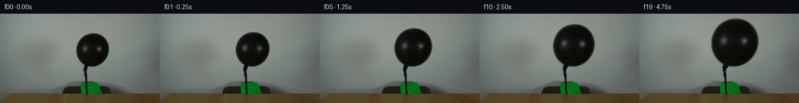

![首帧]()

Round 00
2026-11-04T23:18:04.029921+00:00像素候选变化代码 +254/−0inspection 更新
pixels 81ba05f3efb402d7 · code 520596b2504646f7
查看本轮 generate.py 真实 diff
--- previous/generate.py +++ current/generate.py @@ -0,0 +1,254 @@ +"""Inflate the photographed balloon with local, premultiplied pixel warping. +No model, renderer, network, reference image, or external scene data is used. +""" +from pathlib import Path +import base64 +import json +import re + +import numpy as np +from PIL import Image, ImageDraw +from scipy import ndimage + +from artifact_io import save + +ROOT = Path(__file__).resolve().parent +HEIGHT, WIDTH, COUNT = 144, 256, 20 +ANCHOR = (137.0, 85.0) +FINAL_SCALE = 1.44 + + +def poly_basis(x, y): + """Cubic local wall illumination, fit only to observed wall pixels.""" + return np.stack([ + np.ones_like(x), x, y, x*x, x*y, y*y, + x*x*x, x*x*y, x*y*y, y*y*y, + ], axis=-1) + + +def extract_balloon(original): + y, x = np.indices((HEIGHT, WIDTH), dtype=np.float64) + # The photographed neck below this patch will stay in the base image. + source_roi = (x >= 117) & (x <= 179) & (y >= 27) & (y <= 86) + rough = source_roi & (original.max(axis=2) < 125) + labels, _ = ndimage.label(rough) + sizes = np.bincount(labels.ravel()) + sizes[0] = 0 + rough = ndimage.binary_fill_holes(labels == sizes.argmax()) + samples = ( + (x >= 108) & (x <= 195) & (y >= 15) & (y <= 101) + & ~ndimage.binary_dilation(rough, iterations=6) + & (original.min(axis=2) > 105) + ) + basis = poly_basis((x-148)/48, (y-58)/48) + selected = basis[samples] + observed = original[samples] + coefficients = np.linalg.lstsq(selected, observed, rcond=None)[0] + # Remove only fit outliers; no generated image is inspected visually. + for _ in range(3): + residual = np.linalg.norm(selected @ coefficients - observed, axis=1) + good = residual < np.quantile(residual, 0.94) + coefficients = np.linalg.lstsq(selected[good], observed[good], rcond=None)[0] + wall = np.clip(basis @ coefficients, 0, 255) + + core = ndimage.binary_erosion(rough, iterations=2) + _, nearest = ndimage.distance_transform_edt(~core, return_indices=True) + foreground_rim = original[nearest[0], nearest[1]] + delta = wall - foreground_rim + numerator = ((wall-original)*delta).sum(axis=2) + denominator = np.maximum((delta*delta).sum(axis=2), 1.0) + alpha = np.clip(numerator/denominator, 0, 1) + support = ndimage.binary_dilation(rough, iterations=2) & source_roi + alpha[~support] = 0 + alpha[alpha < 0.025] = 0 + alpha[core] = 1 + # Recover premultiplied surface color to avoid stretching the gray wall + # into a bright fringe around the black silhouette. + premul = original - (1-alpha[..., None])*wall + premul = np.clip(premul, 0, alpha[..., None]*255) + clean = original.copy() + removal = (alpha > 0) & (y <= 85) + clean[removal] = wall[removal] + return alpha, premul, clean, wall, rough + + +def interpolate(array, coordinates): + if array.ndim == 2: + return ndimage.map_coordinates(array, coordinates, order=1, + mode='constant', cval=0, prefilter=False) + return np.stack([ + ndimage.map_coordinates(array[..., c], coordinates, order=1, + mode='constant', cval=0, prefilter=False) + for c in range(3) + ], axis=-1) + + +def build_frames(original): + alpha, premul, clean, wall, rough = extract_balloon(original.astype(float)) … diff truncated; 167 more lines …